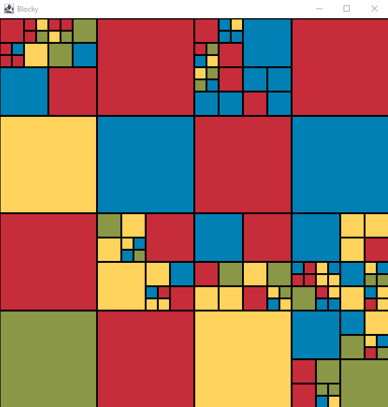
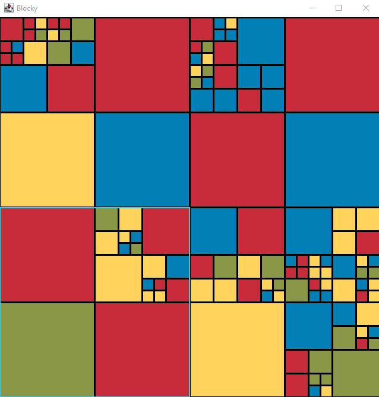
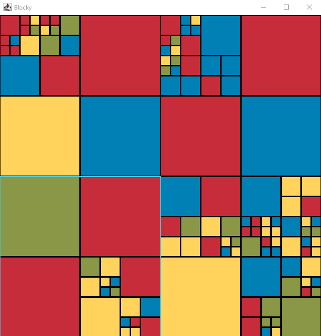
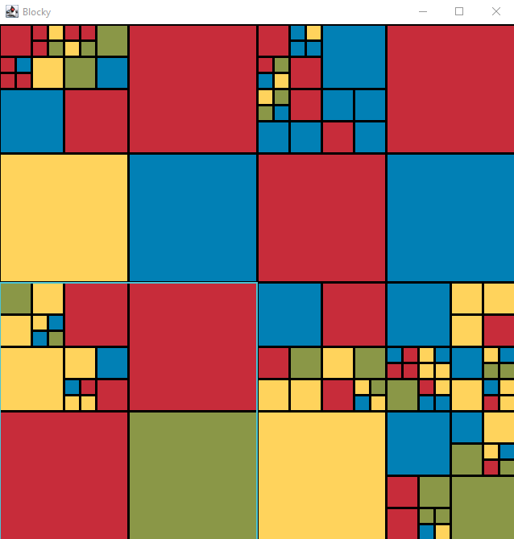
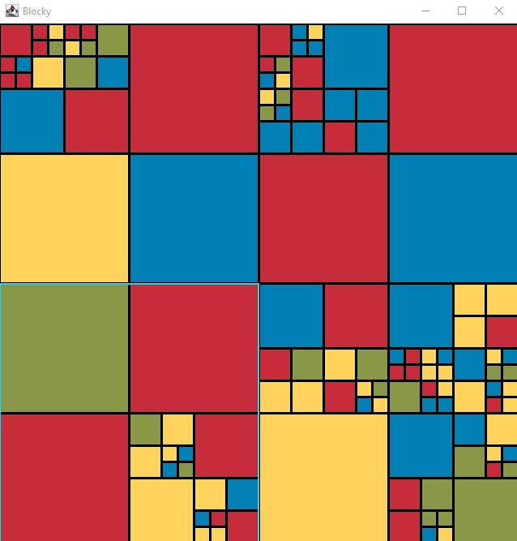
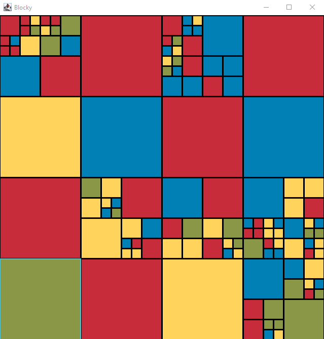
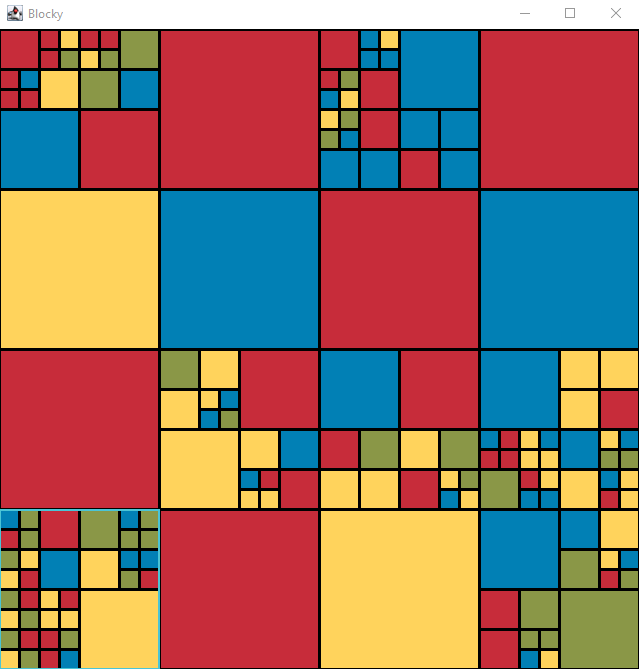

This project came in two parts; the first part was to generate the board, and the second part was to make it interactive.
The board was generated using a tree structure. The board itself was the parent, and each smaller section was a descendant.
A randomly generated board:
Players could click on the board to highlight a block, then use the up arrow key to select its parent:

Using the H key, players could swap the children of a block horizontally:
Using the V key, players could swap the children of a block vertically:
Using the left arrow key, players could rotate the children of a block counterclockwise:
Using the right arrow key, players could rotate the children of a block clockwise:
Using the spacebar or S key, players could smash a block to generate new children for it:
 